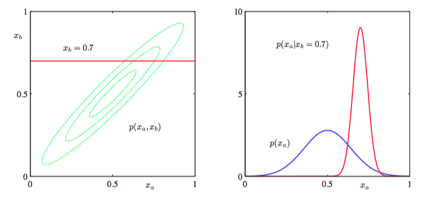

我们已经知道，如果一个联合分布是高斯的，那么条件分布也是高斯的。现在我们转而讨论边缘分布：
接下来，证明这也是高斯的。同样的，计算这个分布的策略是把注意力集中在联合分布的指数中的二次型上面，然后确定边缘分布的均值和方差。
在式（2.70）中，用分区精度矩阵来表示联合分布的二次型。由于目标是积分掉，达到这个目的最简单的方法是：首先为例方便分分只考虑涉及到的项，然后配出平方项。拿出只设计的项：
其中
这样我们就把依赖于的项转化为高斯分布的标准二次型（对应式（2.84）右手边第一项）和一个不依赖于的项（但是依赖于）。取这个二次型为指数项代入式（2.83）得到：
注意，这是对一个非标准化的高斯分布表达式的积分，所以可以很容易的得到这个积分结果为标准化系数的倒数。从标准高斯分布公式（2.43）可以知道这个系数是不依赖于均值，而只依赖于协方差矩阵的行列式。通过配出的平方项，可以积分掉，那么式（2.84）左手边对结果有影响的依赖于的项只剩下式（2.84）中右手边的最后一项，其中由式（2.85）给出。这项与式（2.70）关于的剩余项相结合得到：
其中‘const’是与无关的量。再次与式（2.71）比较。得到边缘分布的协方差：
类似的，均值：
其中运用了式（2.88）。式（2.88）是使用式（2.69）给出的分区精度矩阵来表示的。可以和条件分布中做法一样，可以使用式（2.67）对应给出的分区协方差矩阵重写这个式子。这两个矩阵的关系是：
代入式（2.76），得到：
这样我们就得到边缘分布的符合直觉的的均值及协方差：
这样就得到与使用分区精度矩阵会得到更加简单的表示形式的条件概率相对的，使用分区协方差矩阵就能很简单的表示均值和协方差的边缘分布。
分区高斯的边缘或条件分布总结如下：
分区高斯
对于联合高斯分布和
条件分布：
边缘分布：
图2.9展示涉及到两个变量的多元高斯分布的条件概率分布和边缘概率分布

图 2.9: 左图给出了两个变量上的高斯分布的等高线，右图给出了边缘概率分布 （蓝色 曲线）和的条件概率分布（红色曲线）。